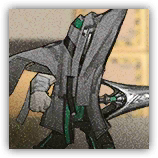
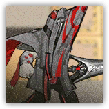

萨卡兹穿刺手Sarkaz Lancer
近战 物理；精英 萨卡兹

|
 |
萨卡兹雇佣兵。经过特殊训练，能够手持长枪发起冲锋，速度越快，对防线造成的冲击也越大。 预热冲锋（可选）。萨卡兹穿刺手若未被突袭，则在掷先攻时获得1d4-1层加速冲锋效应，前提是DM认为战场条件允许它这么做。 |
萨卡兹穿刺手丨Sarkaz Lancer
中型类人（萨卡兹），混乱中立
| AC 12 | 先攻 +4（14） |
| HP 66（12d8+12） | |
| 速度 30 尺 | |
| 调整 | 豁免 | 调整 | 豁免 | 调整 | 豁免 | |||||||||
|---|---|---|---|---|---|---|---|---|---|---|---|---|---|---|
| 力量 | 15 | +2 | +2 | 敏捷 | 15 | +2 | +4 | 体质 | 13 | +1 | +1 | |||
| 智力 | 9 | -1 | -1 | 感知 | 12 | +1 | +3 | 魅力 | 8 | -1 | -1 |
| 技能 运动+4，察觉+3，威吓+1 |
| 抗性 毒素 |
| 装备 骑枪 |
| 感官 黑暗视觉60尺，被动察觉13 |
| 语言 通用语，萨卡兹语 |
| CR 2（XP 450；PB +2） |
特质 Traits
魔法抗性 Magic Resistence。萨卡兹为抵抗法术和其它魔法效应而作的豁免检定具有优势。
灵活移动 Agile Movement。对萨卡兹穿刺手组长发动的借机攻击都具有劣势。
动作 Actions
多重攻击 Multiattack。萨卡兹穿刺手发动两次长枪攻击。
长枪 Lance。近战攻击检定：+4，触及10尺。命中：7（1d10+2）穿刺伤害。
加速冲锋 Acceleration。萨卡兹穿刺手使自己获得以下效应，持续1分钟：移动速度增加10尺；下次长枪攻击具有优势，并在命中时额外造成5（1d10）穿刺伤害。此效果可以叠加，但会在萨卡兹穿刺手失败于任何豁免、遭到移动速度减少、遭到强制位移效应或造成了任何伤害后清空。
萨卡兹穿刺手组长Sarkaz Lancer Leader
近战 物理；精英 萨卡兹
|
 |
萨卡兹雇佣兵。比普通的穿刺手更具威胁。经过特殊训练，能够手持长枪发起冲锋，速度越快，对防线造成的冲击也越大。 预热冲锋（可选）。萨卡兹穿刺手组长若未被突袭，则在掷先攻时获得1d6-1层加速冲锋效应，前提是DM认为战场条件允许它这么做。 |
萨卡兹穿刺手组长丨Sarkaz Lancer Leader
中型类人（萨卡兹），混乱中立
| AC 13 | 先攻 +5（15） |
| HP 84（13d8+26） | |
| 速度 30 尺 | |
| 调整 | 豁免 | 调整 | 豁免 | 调整 | 豁免 | |||||||||
|---|---|---|---|---|---|---|---|---|---|---|---|---|---|---|
| 力量 | 16 | +3 | +3 | 敏捷 | 17 | +3 | +6 | 体质 | 14 | +2 | +4 | |||
| 智力 | 11 | +0 | +0 | 感知 | 13 | +1 | +1 | 魅力 | 9 | -1 | -1 |
| 技能 运动+5，察觉+3，威吓+1 |
| 抗性 毒素 |
| 装备 骑枪 |
| 感官 黑暗视觉60尺，被动察觉13 |
| 语言 通用语，萨卡兹语 |
| CR 4（XP 1,100；PB +2） |
特质Traits
魔法抗性 Magic Resistence。萨卡兹为抵抗法术和其它魔法效应而作的豁免检定具有优势。
灵活移动 Agile Movement。对萨卡兹穿刺手组长发动的借机攻击都具有劣势。
动作Actions
多重攻击 Multiattack。萨卡兹穿刺手发动两次长枪攻击。
长枪 Lance。近战攻击检定：+5，触及10尺。命中：8（1d10+3）穿刺伤害。若萨卡兹穿刺手朝目标直线移动至少10尺后立刻发动这次攻击，若目标体型不大于中型，则应击倒地。
加速冲锋 Acceleration。萨卡兹穿刺手使自己获得以下效应，持续1分钟：移动速度增加10尺；下次长枪攻击具有优势，并在命中时额外造成5（1d10）穿刺伤害。此效果可以叠加，但会在萨卡兹穿刺手失败于任何豁免、遭到移动速度减少、遭到强制位移效应或造成了任何伤害后清空。
反应 Reactions
突刺 Spike。触发：可见生物进入萨卡兹穿刺手组长周围10尺内。响应：萨卡兹穿刺手组长对目标发动一次长枪攻击。